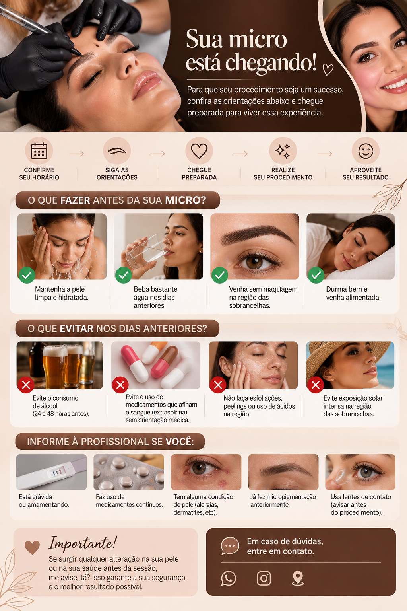
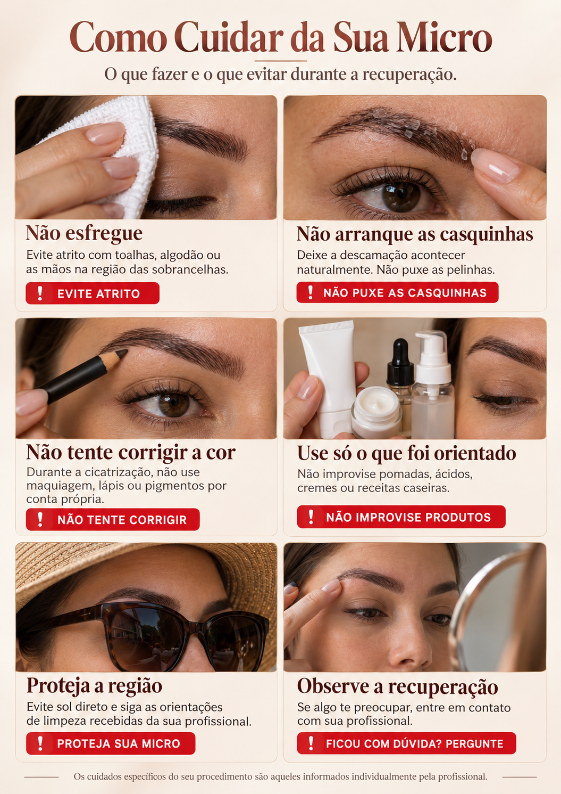
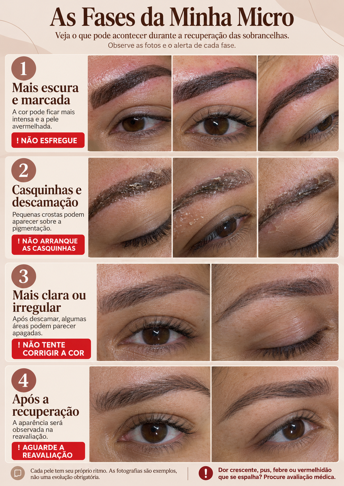
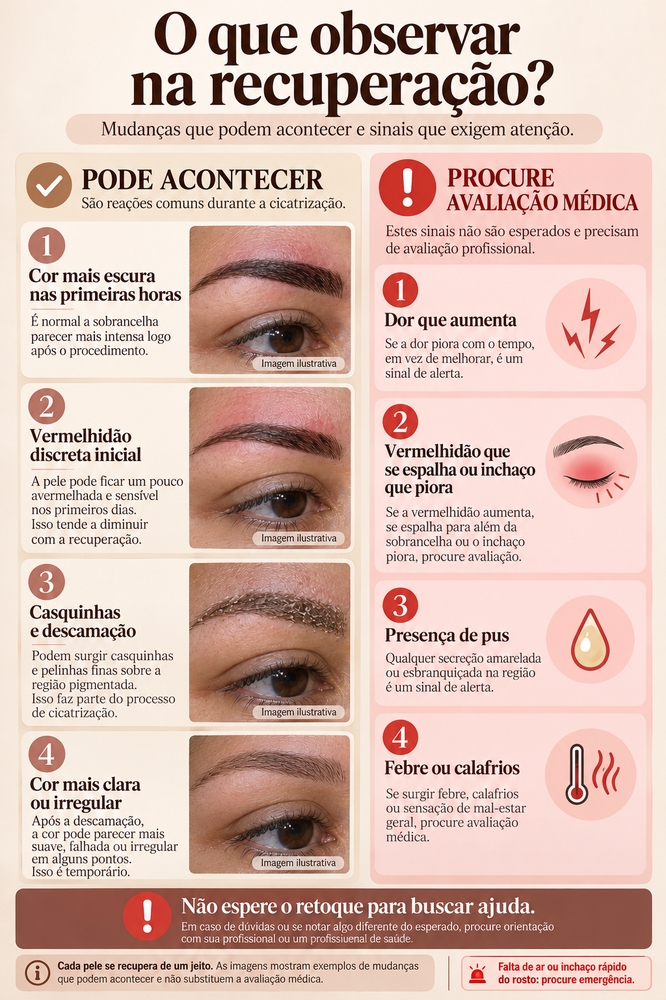
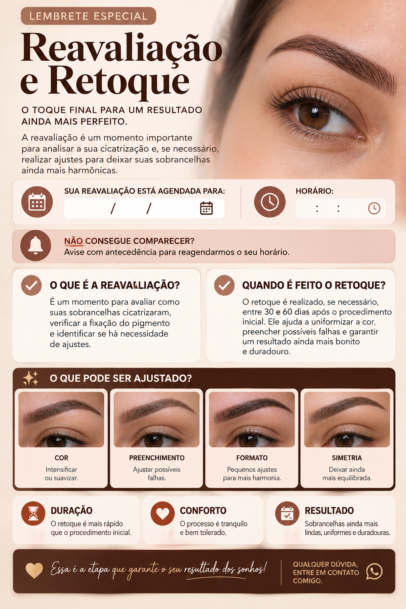
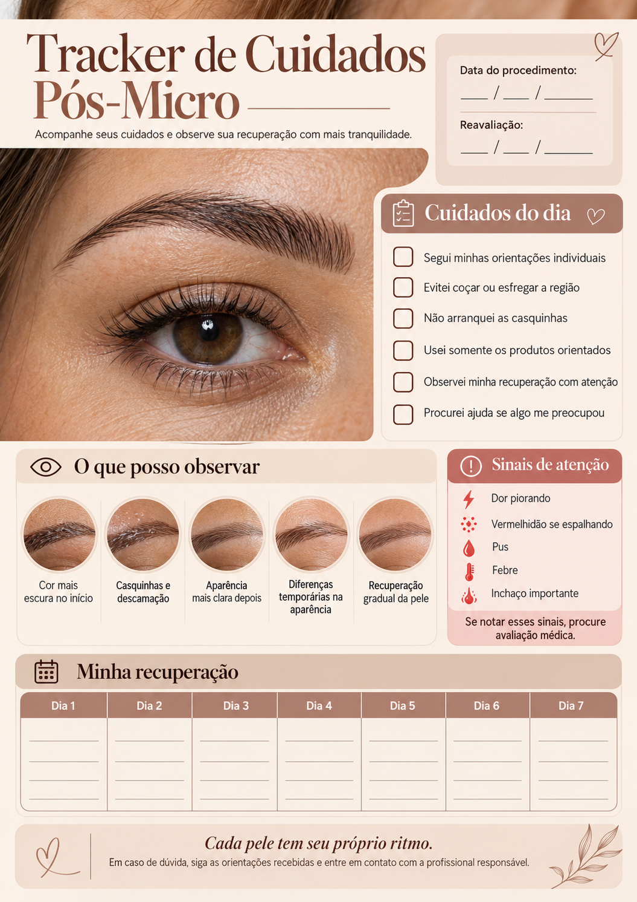
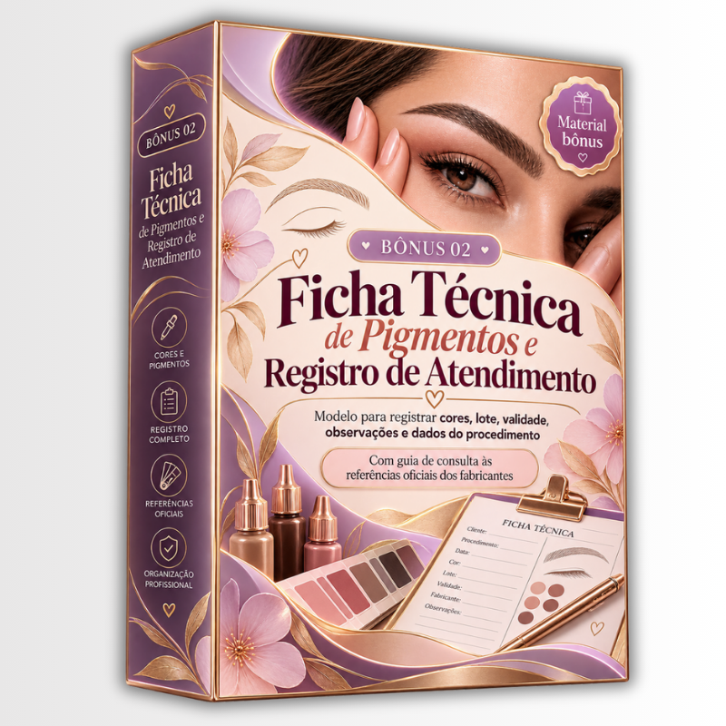
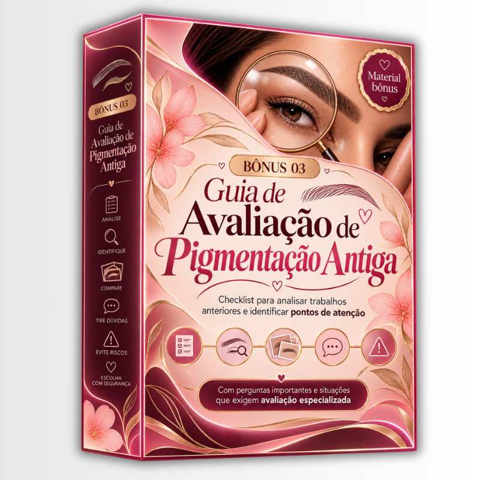

Compra 100% Segura e Protegida
CHEGA DE CLIENTES EM PÂNICO NA DESCAMAÇÃO ACHANDO QUE A MICROPIGMENTAÇÃO DEU ERRADO
Materiais prontos para você abrir, enviar e consultar do primeiro contato ao retoque.
O Do Oi ao Retoque organiza a comunicação da jornada da cliente: apresentação, preparação, aprovação, cuidados e reavaliação. Você encontra o material da etapa certa sem buscar mensagens antigas ou reescrever a mesma orientação.
- Apresentação de orçamento pronta para personalizar e enviar
- Guia Pré-Micro e planner de preparação antes do atendimento
- Ficha de aprovação, consentimento e checklist visual
- Guia das fases da descamação e tracker de cuidados
- Cartão de reavaliação e retoque para o momento certo
- Vídeo de 1 minuto mostrando como editar do seu jeito
📲 Acesso imediato após a confirmação do pagamento
ACESSO IMEDIATO
VEJA OS MATERIAIS QUE VOCÊ VAI RECEBER JÁ






OS MATERIAIS DO KIT POSSUEM:
JORNADA MICRO GUIADA: O MATERIAL CERTO PARA CADA MOMENTO DO ATENDIMENTO
A Jornada Micro Guiada não substitui sua avaliação profissional. Ela organiza quais informações a cliente recebe antes, durante e depois do procedimento, para você não depender da memória em cada conversa.
🔥 APENAS HOJE
Aproveite enquanto a oferta está disponível!
Não perca mais tempo procurando o que enviar em cada etapa da jornada da sua cliente.
GARANTIR MEU ACESSO AGORAESTE MATERIAL É IDEAL PARA VOCÊ QUE DESEJA
APRESENTAR PROCEDIMENTO E ORÇAMENTO
Use uma apresentação pronta antes de marcar o horário.
ENVIAR O PREPARO PRÉ-MICRO
Entregue orientações antes da sessão sem reescrever tudo.
REGISTRAR APROVAÇÃO E CONSENTIMENTO
Tenha ficha e assinatura na etapa do atendimento.
EXPLICAR A DESCAMAÇÃO
Mostre a fase em que a cliente está com um guia visual.
CONSULTAR PIGMENTO NO RETOQUE
Registre dados do atendimento antes da reavaliação.
CHAMAR PARA REAVALIAÇÃO
Envie o cartão de retorno no momento certo.
⚡ ACESSO IMEDIATO
TUDO O QUE VOCÊ VAI RECEBER
UMA JORNADA ORGANIZADA PARA VOCÊ CONSULTAR, PERSONALIZAR E ENVIAR.
Você escolhe o que usar e já pode começar na mesma hora.
- Apresentação de orçamento
- Guia Visual Pré-Micro e Planner de Preparação
- Ficha de Aprovação, Consentimento e Checklist Visual
- Guia As Fases da Minha Micro e Tracker de Cuidados
- Cartão Digital de Reavaliação e Retoque
- Mapa Rápido de Envio da Jornada
- Vídeo curto de personalização dos materiais
E NÃO PARA POR AÍ... TEM MAIS!
VOCÊ TAMBÉM VAI RECEBER
🎁 3 BÔNUS EXCLUSIVOS
BÔNUS #1
PACK DE 12 RESPOSTAS PRONTAS PARA WHATSAPP
Mensagens-base para dúvidas recorrentes em cada fase da jornada.
Valor: R$27 GRÁTIS
BÔNUS #2

FICHA TÉCNICA DE PIGMENTOS E ATENDIMENTO
Registro para consultar informações técnicas antes da reavaliação.
Valor: R$27 GRÁTIS
BÔNUS #3

GUIA DE AVALIAÇÃO DE PIGMENTAÇÃO ANTIGA
Checklist inicial para observar antes de conduzir o atendimento.
Valor: R$27 GRÁTIS
🔥 ÚLTIMA CHANCE — OFERTA TERMINA HOJE
ESCOLHA A MELHOR OPÇÃO PARA VOCÊ
PLANO BÁSICO
Você recebe:
- Apresentação de orçamento pronta para personalizar e enviar
- Guia Visual Pré-Micro + planner de preparação da cliente
- Ficha de aprovação, consentimento e checklist do atendimento
- Guia das fases da descamação + tracker de cuidados
- Cartão de reavaliação e retoque para enviar no momento certo
- Mapa rápido: o que enviar em cada etapa da jornada
- Vídeo curto mostrando como personalizar os materiais
de R$27,90 por:
R$ 17,90
ou 6x de R$3,33 no cartão
Você economiza R$10,00
GARANTIR O PLANO BÁSICO🔥 ÚLTIMA CHANCE — OFERTA TERMINA HOJE
PLANO COMPLETO
⚡ 2x MAIS CONTEÚDOS
- Apresentação de orçamento pronta para personalizar e enviar
- Guia Visual Pré-Micro + planner de preparação da cliente
- Ficha de aprovação, consentimento e checklist do atendimento
- Guia das fases da descamação + tracker de cuidados
- Cartão de reavaliação e retoque para enviar no momento certo
- Mapa rápido: o que enviar em cada etapa da jornada
- Vídeo curto mostrando como personalizar os materiais
- BÔNUS 01 — Pack de 12 Respostas Prontas para WhatsApp
- BÔNUS 02 — Ficha Técnica de Pigmentos e Atendimento
- BÔNUS 03 — Guia de Avaliação de Pigmentação Antiga
de R$37,90 por:
R$ 27,90
ou 6x de R$5,00 no cartão
Você economiza R$10,00
GARANTIR O PLANO COMPLETO🔒 Compra 100% segura e garantida

GARANTIA DE 15 DIAS — ZERO RISCO PRA VOCÊ
Isso significa que, a qualquer momento, se você achar que o material não faz sentido para sua rotina, poderá solicitar o reembolso conforme as condições da plataforma.
- Confira se os materiais fazem sentido para sua rotina;
- Veja se o formato atende sua necessidade;
- Consulte as condições apresentadas no checkout.
O risco fica do nosso lado.
PERGUNTAS FREQUENTES
O acesso é imediato após a compra?
Após a confirmação do pagamento, o acesso é liberado pela plataforma de venda.
Consigo usar os materiais pelo celular?
Sim. O kit foi pensado para consulta, envio e uso no celular; você também pode imprimir os arquivos indicados.
Os materiais substituem avaliação profissional?
Não. Eles organizam comunicação e registros. A decisão técnica continua sob responsabilidade da profissional.
Posso personalizar com minha marca?
Os materiais indicados como editáveis foram preparados para personalização conforme a orientação do kit.
Posso imprimir as fichas?
Sim. Você poderá usar os arquivos indicados no celular ou impressos na sua bancada.
Como funciona a garantia?
A garantia e as condições de reembolso são as apresentadas no checkout no momento da compra.